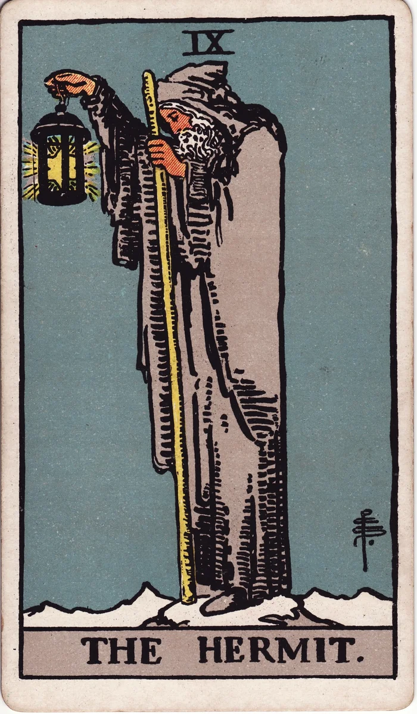

Tarot e introspección
El tarot como espejo: cuando una imagen nos invita a contar nuestra propia historia
Un niño contempla un violín que descansa sobre una mesa. En los años treinta, esa imagen formaba parte de unas láminas de Harvard que pedían algo muy parecido a lo que ocurre frente a una carta del tarot: contar una historia. Décadas después, el niño del dibujo contó la suya.

Hay imágenes que no explican nada y, justo por eso, nos hacen hablar. Una carta del tarot es una de ellas: una figura detenida, un gesto a medio hacer, un paisaje que no termina en el borde. Quien la mira empieza, casi sin darse cuenta, a ponerle un antes y un después.
En este blog ya seguimos las cartas por las palabras de Carl Jung, por el castillo de Italo Calvino, donde unos viajeros sin voz se cuentan la vida con ellas, y por las escenas de Pamela Colman Smith. Hoy miramos un uso más silencioso y cotidiano: el tarot como espejo, una lectura simbólica que no busca respuestas afuera, sino preguntas adentro.
Un niño frente a un violín
La historia empieza con otro niño. Según se cuenta, una estudiante de Henry A. Murray, en Harvard, le habló de su hijo: mientras se recuperaba de una enfermedad, pasaba los días recortando imágenes de revistas e inventando historias sobre ellas. Ella se preguntó si unas imágenes así podrían servir para asomarse a las fantasías de una persona.
De esa pregunta nació, en la Clínica Psicológica de Harvard, el Test de Apercepción Temática, conocido como TAT. En 1935, Christiana D. Morgan, como primera autora, y Murray lo presentaron en un artículo titulado «A Method for Investigating Fantasies», que se traduce más o menos como «Un método para investigar fantasías». Eran láminas con figuras humanas en escenas ambiguas. A cada persona se le pedía una historia: qué había llevado hasta ese momento, qué estaba pasando, qué sentían y pensaban los personajes y cómo terminaba todo.
Morgan dibujó varias de esas láminas. Una de ellas, la que con los años se convertiría en la Lámina 1, muestra a un niño que contempla un violín sobre una mesa. El investigador Wesley G. Morgan, que rastreó el origen de las primeras láminas, descubrió que era la copia cuidadosa de una fotografía del joven violinista Yehudi Menuhin, tomada por el fotógrafo neoyorquino Samuel Lumiere. Otras salieron de ilustraciones recortadas de revistas y redibujadas hasta borrar su procedencia. En el otoño de 1956, durante una mudanza de la clínica, el investigador David Ricks vio algunos de esos dibujos originales en una papelera, los rescató y se los llevó a Murray: le pareció que formaban parte de la historia de la psicología.
Christiana Morgan había conocido de cerca el mundo de Jung: fue su paciente antes de trabajar en la clínica. Las versiones posteriores de la prueba dejaron de llevar su nombre, pero el archivo de Harvard que conserva sus papeles la recuerda como coautora.
El niño cuenta su historia
En 1993, Wesley G. Morgan le escribió a Menuhin, ya Lord Menuhin, para preguntarle por aquella fotografía. Menuhin respondió con su propia historia, como si hiciera la prueba frente a sí mismo:
«En realidad, estaba mirando en mi estado habitual, medio ausente en mi propio mundo y medio en el presente. Casi siempre he podido “retirarme” de esa manera. También pensaba que mi vida estaba atada al instrumento, y me preguntaba si le haría justicia».Yehudi Menuhin, carta a Wesley G. Morgan, 31 de octubre de 1993 (traducción propia)
Es una escena extraordinaria: el modelo de una imagen hecha para despertar historias ajenas vuelve a ella décadas después y encuentra la suya. Medio ausente, medio presente: así se parece también el estado de quien se queda mirando una carta.
Una imagen abierta
El TAT no es tarot, y el tarot no es una prueba de personalidad. Pertenecen a mundos distintos y tienen propósitos distintos. Pero comparten un gesto: una imagen que no se cierra sola y alguien que la completa con su propia voz. Las cartas que Pamela Colman Smith dibujó en 1909 llevan ese gesto hasta los arcanos menores, donde cada número se volvió escena. Frente al Ermitaño, con su linterna en lo alto de la montaña, es difícil no preguntarse adónde va, de dónde viene, a quién alumbra.
Arthur Edward Waite, que encargó el mazo, escribió que en esa linterna brilla una estrella y que su luz parece decir: «donde yo estoy, tú también puedes estar» (traducción propia). Es una manera hermosa de nombrar lo que hace una imagen cuando nos detiene: abre un lugar donde podemos estar.
Leer para una misma
Durante mucho tiempo, los libros de tarot repitieron un consejo: no leerse las cartas a una misma. La escritora Rachel Pollack lo recordaba así: en aquellos años, «casi todo el mundo decía que nunca debías leer para ti» (traducción propia).
Mary K. Greer, que empezó a enseñar tarot en 1974 en la Universidad de Florida Central, publicó en octubre de 1984 Tarot for Your Self: A Workbook for Personal Transformation. Su título de trabajo había sido Personalizing the Tarot. Era un cuaderno: pedía escribir, ensayar y volver a las propias notas, y se presentaba como «una herramienta para alcanzar el autoconocimiento» (traducción propia).
Sus sugerencias tienen algo de taller de artista. «¡No tienes que interpretar las cartas!», escribe (traducción propia): basta con hacer una tirada como parte de una entrada de diario y observar cómo se relacionan las cartas con lo escrito. Propone también grabarse explicando la tirada en voz alta, como si se leyera para otra persona, y dejarla un tiempo sobre la cómoda para volver a mirarla. En 2019, la edición del 35.º aniversario cambió el subtítulo por A Workbook for the Inward Journey, que se traduce más o menos como «un cuaderno para el viaje interior». Greer lo resume así: «Decidir trabajar con el tarot es como emprender un largo viaje hacia adentro» (traducción propia).
Lo que cuentan quienes leen hoy
Las voces de ahora siguen ese hilo. En 2025, la investigadora Cătălina Enoiu, de la Universidad de Bucarest, publicó un estudio basado en entrevistas con quince practicantes jóvenes de tarot. Ahí describe el tarot como un «refugio simbólico», «un dispositivo para traducir la incertidumbre en sentido» (traducción propia). Una de las personas entrevistadas cuenta que, cuando siente que no tiene respuestas para lo que vive, se hace una lectura, y que eso la tranquiliza: le recuerda que lo que siente es parte de la vida y que no va a durar toda la vida.
Ese mismo año, Baek Hea-Kyung y Chung Kiseob, de la Universidad Inha, en Corea del Sur, publicaron la experiencia de seis estudiantes de preparatoria que usaron cartas del tarot en sesiones de orientación vocacional. Los estudiantes proyectaron en las cartas su presente y su futuro, y contaron que eso los llevó a pensar su camino con más profundidad. Los autores anotan también un matiz valioso: cuando una carta muestra algo distinto de lo que alguien espera, puede desanimar, y por eso importa acompañar ese momento con cuidado.
Son estudios pequeños, de pocas voces. No miden nada universal: recogen experiencias. Y en ellas se repite una idea: la carta no habla sola, habla con quien la mira.
Lo que permanece abierto
Los documentos dicen quién dibujó el violín, en qué año se publicó un cuaderno y qué cuentan quienes leen hoy. No agotan lo que sucede cuando una imagen nos devuelve la mirada. Menuhin contó la historia de su fotografía décadas después de que se tomara, y aun así la contó en presente: medio en su mundo, medio aquí.
Te proponemos un ejercicio a la manera de aquellas láminas. Elige una carta, del mazo que tengas, de memoria o el Ermitaño de esta página. Escribe una historia breve: qué pasó antes, qué está pasando, qué siente la figura, cómo termina. Después reléela como si la hubiera escrito otra persona y subraya una frase que también hable de ti. Esa frase subrayada ya es tu lectura.
Fuentes
- Morgan, Christiana D. y Henry A. Murray. «A Method for Investigating Fantasies: The Thematic Apperception Test». Archives of Neurology and Psychiatry, vol. 34, n.º 2, 1935, pp. 289-306. doi.org
- «Thematic Apperception Test». Encyclopedia.com (Gale). encyclopedia.com
- Morgan, Wesley G. «Card 1», en sus páginas sobre las láminas del TAT (University of Tennessee), copia de archivo. web.archive.org
- Morgan, Wesley G. «Picture C», en sus páginas sobre las láminas del TAT (University of Tennessee), copia de archivo. web.archive.org
- Morgan, Wesley G. «Origin and History of the Earliest Thematic Apperception Test Pictures». Journal of Personality Assessment, vol. 79, n.º 3, 2002, pp. 422-445. doi.org
- Harvard Library. «Christiana Morgan papers, 1925-1974». hollisarchives.lib.harvard.edu
- Waite, Arthur Edward. The Pictorial Key to the Tarot. Londres: William Rider & Son, publicado a finales de 1910 con fecha de 1911. «IX. The Hermit»: sacred-texts.com
- Greer, Mary K. Tarot for Your Self: A Workbook for Personal Transformation. 2.ª ed. Franklin Lakes: New Page Books, 2002 (1.ª ed., 1984). Lista de publicaciones de la autora: marykgreer.com
- Red Wheel/Weiser. Tarot for Your Self: A Workbook for the Inward Journey (35th Anniversary Edition), 2019, con comentario de Rachel Pollack y biografía de la autora. redwheelweiser.com
- Enoiu, Cătălina. «Tarot as a symbolic refuge in the digital age. Forming interpretative communities and managing uncertainty in the context of social platforms». Journal of Comparative Research in Anthropology and Sociology, vol. 16, n.º 2, 2025, pp. 43-77. journals.unibuc.ro
- Baek, Hea-Kyung y Kiseob Chung. «A Study on Career Counseling Using Tarot Cards (Focused on High School Students)». Journal of Education & Culture (교육문화연구), vol. 31, n.º 4, 2025, pp. 801-820. DOI: 10.24159/joec.2025.31.4.801. kci.go.kr
- Imagen: Pamela Colman Smith, The Hermit, tarot Rider-Waite-Smith, dominio público. Wikimedia Commons
Las citas de Yehudi Menuhin, A. E. Waite, Rachel Pollack, Mary K. Greer y Cătălina Enoiu provienen de los originales en inglés; las traducciones al español son nuestras.